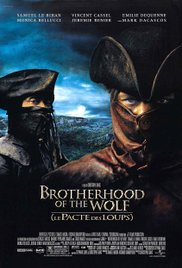
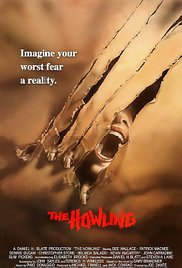

An American Werewolf in London
(1981) Two American college students on a walking tour of Britain, are attacked by a werewolf, that none of the locals will admit exists.
Trailer (YouTube)
Romasanta: The Werewolf Hunt
(2004) An uproar is caused when some mutilated cadavers are discovered, giving way to the legend of the 'Werewolf of Allariz'. A traveling vendor rolls through the forest in his old wagon.
Trailer (YouTube)
When Animals Dream
(2015) 16-year old Marie lives on a small island with her seriously ill mother and her father, who takes care of the family. But suddenly mysterious deaths happen and Marie can feel something strange happening to her body.
Trailer (YouTube)
Ginger Snaps
(2000) Two death-obsessed sisters, outcasts in their suburban neighborhood, must deal with the tragic consequences when one of them is bitten by a deadly werewolf.
Trailer (YouTube)
What We Do in the Shadows
(2014) A documentary team films the lives of a group of vampires for a few months. The vampires share a house in Wellington, New Zealand. Turns out vampires have their own domestic problems too.

Trailer (YouTube)
Wilderness
(1996) A disturbed young woman has trouble convincing her lover that she's a wolf, and her psychiatrist is sure he's discovered a new complex that will make his name.

Trailer (YouTube)
Brotherhood of the Wolf
(2001) In 18th century France, the Chevalier de Fronsac and his native American friend Mani are sent by the King to the Gevaudan province to investigate the killings of hundreds by a mysterious beast.

Trailer (YouTube)
Dog Soldiers
(2002) A routine military exercise turns into a nightmare in the Scotland wilderness.
Trailer (YouTube)
The Howling
(1981) After a bizarre and near fatal encounter with a serial killer, a television newswoman is sent to a remote mountain resort whose residents may not be what they seem.

Trailer (YouTube)
The Wolf Man
(1941) A practical man returns to his homeland, is attacked by a creature of folklore, and infected with a horrific disease his disciplined mind tells him can not possibly exist.

Trailer (YouTube)
Wolfen
(1981) A New York cop investigates a series of brutal deaths that resemble animal attacks.

Trailer (YouTube)
The Wolfman
(2010) Upon his return to his ancestral homeland, an American man is bitten, and subsequently cursed by, a werewolf.

Trailer (YouTube)